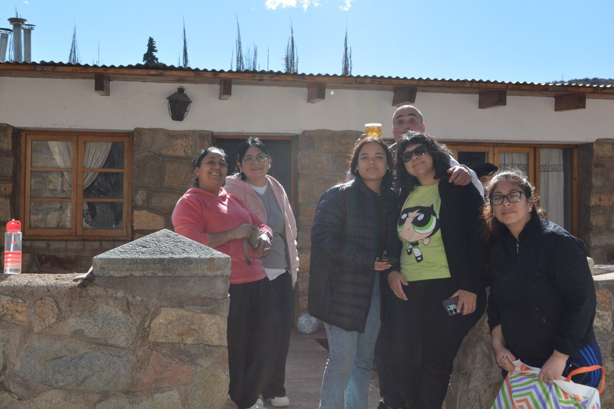

01 / EL GRAN DÍA
✳Hay días que
Hay días que
merecen mil fotos.
Una mesa compartida, el fuego encendido, las montañas de fondo y las personas que hacen que cada momento valga la pena. Un álbum lleno de color, encuentros y recuerdos.
EXPLORAR LAS 48 FOTOGRAFÍAS ↗
¡QUÉ DÍA! ✦